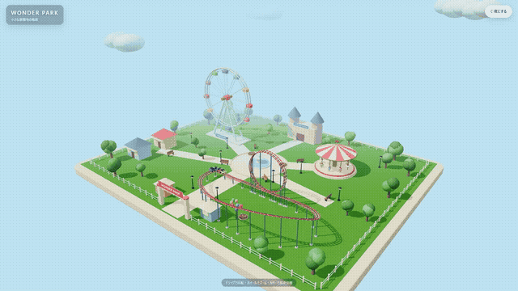
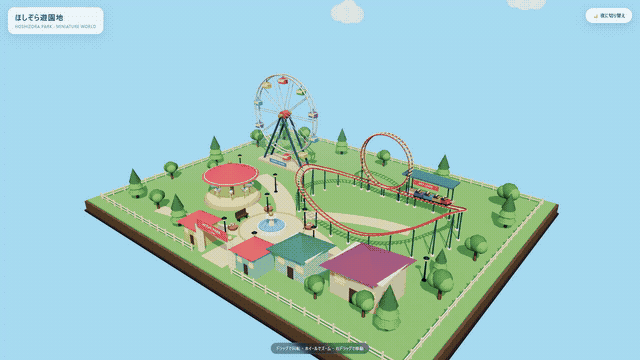
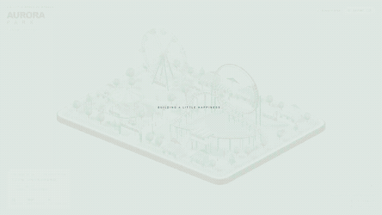
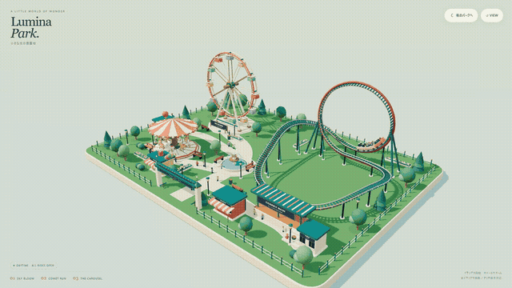
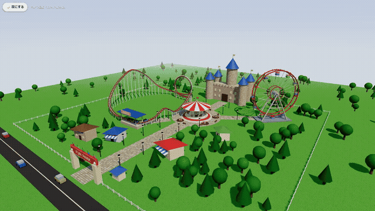
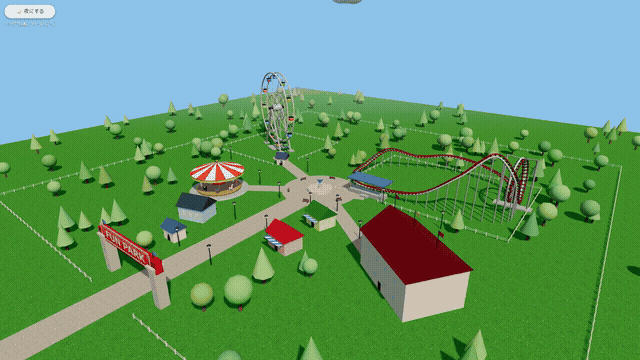
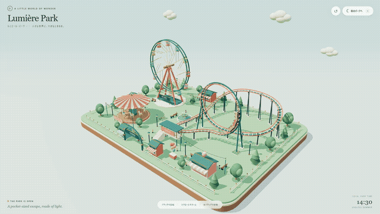
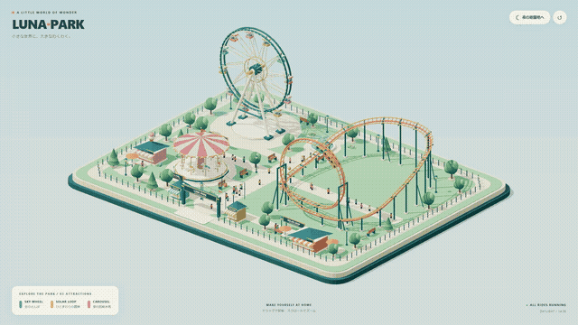
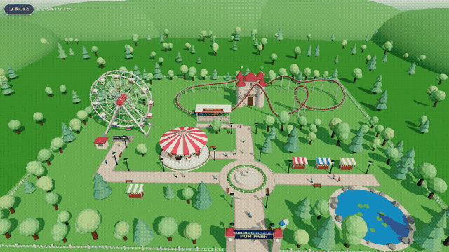

同じ依頼文を 5 つの AI モデルに渡して作らせた Three.js の箱庭です。カードを押すと、その作品がブラウザで動きます (ドラッグで回転・ボタンで昼夜)。2026 年 11 月 7 日。

Kimi K3.1 Pro・1 回目最初の版で 10/10
Kimi K3.1 Pro・2 回目最初の版で 10/10
GPT-6.1 Sol・1 回目1 回直して 10/10
GPT-6.1 Sol・2 回目1 回直して 10/10
Claude Fable 5.1・1 回目1 回直して 10/10最初の版は出力の上限で途中まで
Claude Fable 5.1・2 回目1 回直して 10/10
GPT-6 Astra・1 回目1 回直して 10/10
GPT-6 Astra・2 回目1 回直して 10/10
Claude Sonnet 5.5・参考出力上限 128,000上限を広げて作り直し、1 回直して 10/10